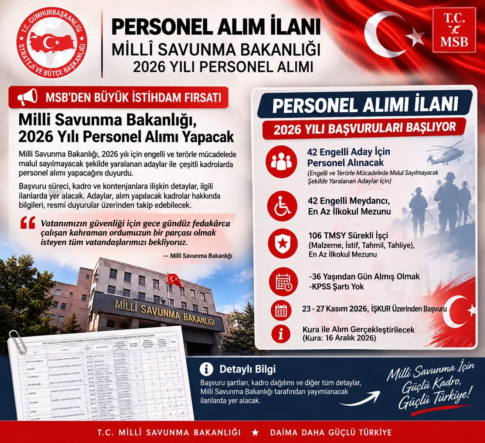

Engelli ve dezavantajlı vatandaşlarımızın istihdamı ve kamu alımları ile ilgili en güncel gelişmeler.

42 Engelli Meydancı ve 106 Terörle Mücadelede Malul Sayılmayacak Şekilde Yaralanan (TMSY) İşçi Alımı
Millî Savunma Bakanlığı (MSB), 2026 yılı kapsamında 148 sürekli işçi alımı gerçekleştirecektir.
Yayımlanan ilana göre, Bakanlık bünyesinde istihdam edilmek üzere 42 engelli meydancı ve 106 Terörle Mücadelede Malul Sayılmayacak Şekilde Yaralanan (TMSY) sürekli işçi alınacaktır.
Alım kapsamında adaylardan en az ilkokul mezunu olmaları istenirken, başvurularda KPSS puanı şartı aranmayacaktır.
Adayların 36 yaşından gün almamış olması gerekmektedir.
Afyonkarahisar, Ankara, Çanakkale, Diyarbakır, Elazığ, Mersin, İstanbul, İzmir, Kayseri, Kocaeli, Muğla, Niğde ve Tekirdağ.
Başvuru yapmayı düşünen adayların İŞKUR üzerinden yayımlanan resmî ilanı ve özel başvuru şartlarını incelemeleri önem taşıyor.
"Gönül Köprüsü Engelli Memur ve İşçi Derneği olarak engelli vatandaşlarımızın istihdama katılmasını destekliyor; tüm adaylara başvuru ve kura sürecinde başarılar diliyoruz."